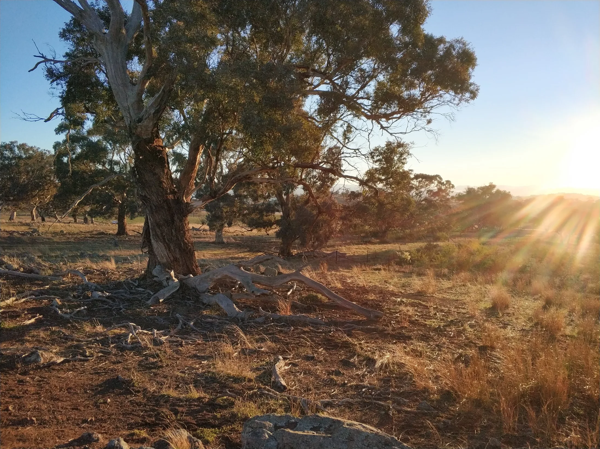
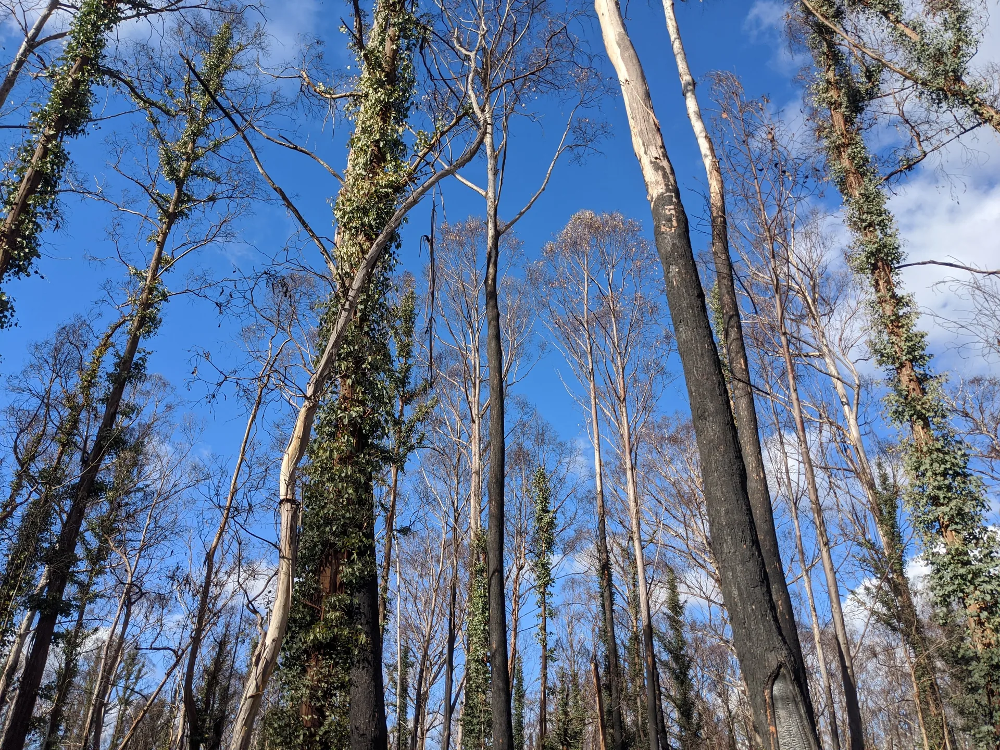
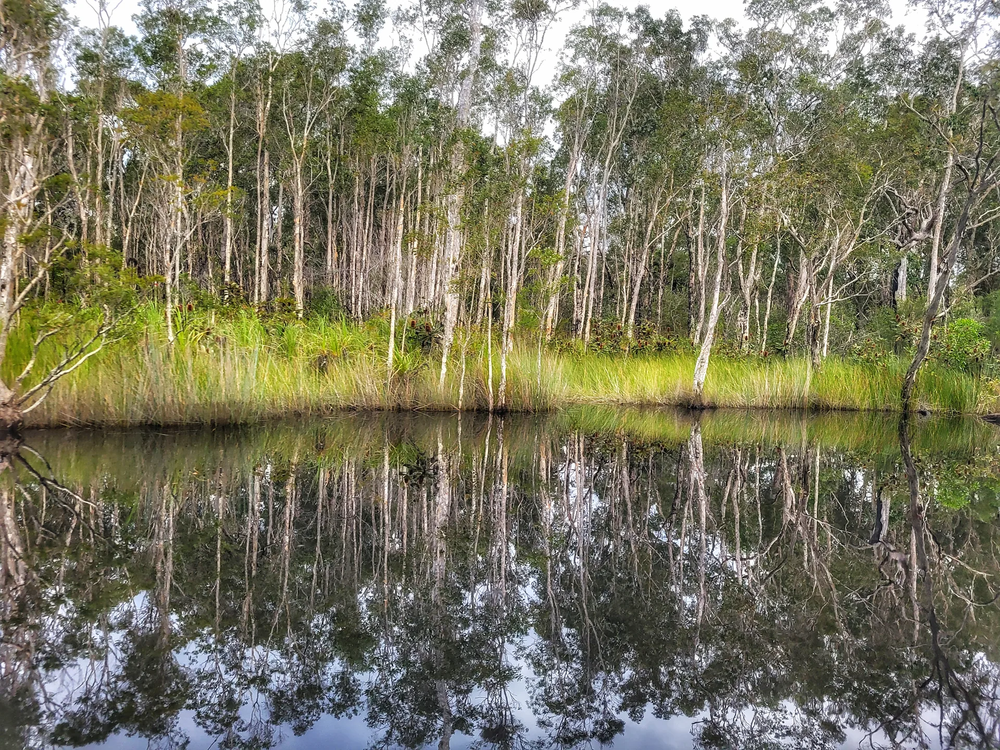

Funding strategist for nonprofits
A grant writer writes one application. I own the whole pipeline.
And I start further back than you'd expect: not with the next application, but with whether funders can back you at all.
From there I hold the whole thing... finding the opportunities, getting you ready to win them, writing the applications, and keeping the funders warm long after the cheque clears. One person owning your funding, so it stops depending on whoever has a spare hour.
Book my discovery call(opens in new tab)Those opportunities aren't slipping just because you're flat out.
Being flat out is real, and it's not the whole story. Grant seeking was never actually anyone's job at your place. It got bolted onto a role that was already full, so it loses to whatever's more urgent, which is most days. The Strategic Funding Partnership is that someone: an embedded funding strategist who owns your whole funding pipeline, so it stops depending on whoever happens to have a spare hour. I work with conservation, environment and purpose-led organisations, nonprofit or for-profit, based in Australia and wherever else the work is happening.
Word on the street.
"If there's an opportunity, mostly we let them pass. We don't even bother replying. Or everyone tries to contribute, and it's a real scramble."A founder, on a discovery call
Thanks, one-off grant writer. I'll take it from here.
A grant writer who parachutes in for a single application is great for getting you started. But if you want funding that keeps coming, you'll need something... well, more. This partnership isn't drafting to a deadline, it's owning the whole pipeline: the strategy underneath, the applications on top, and the funder relationships that turn one grant into the next. And because I'm a conservation scientist who's worked inside this sector, you skip the vocabulary lesson entirely. Here's the line the whole thing turns on: more applications won't fix a case that isn't fundable yet. So I start there.

First, we work out where you already are. (Not everyone starts at square one.)
An honest assessment at the start places you in the flow below, so you begin at the point that actually fits and don't pay to rebuild something you've already got.
Get fundable
I coach you to get your story, your outcomes and your strategic plan into the shape funders back.
Get findable
I help you position your organisation so the right funders notice it, and your case for support reads the same everywhere they look.
Get funded
I run the pipeline for you: finding the opportunities, writing the applications, and keeping funders warm after the cheque clears, so one grant sets up the next.
What's in the partnership.
Your theory of change
Built with you in facilitated sessions: your vision, your outcomes (not just your outputs) and the pathway a funder needs to see.
Your one-page strategic plan
Coached out of you: the goals, the team roles and the three-year picture that show you can deliver what you promise.
Your positioning and case for support
Shaped together, so you say the same thing everywhere a funder looks.
The grant pipeline, done for you
A monthly intelligence report matched to you, up to four applications a year written end to end, and a 12-month funding calendar reviewed each quarter.
Funder relationships kept warm
Stewardship, impact reporting and acquittal prep, so a grant won this year sets up the next instead of going cold.
A funding engine
One that no longer depends on whoever has a spare hour.

Photo: Maria"Sounds good... but what's this going to cost me?"
Fair question, and I get the hesitation. Here's the thing though: you've probably already paid for this, just in ways that never showed up on an invoice. The opportunities that passed unanswered. The application someone stitched together at 11pm that didn't land. The funder who went quiet. The Strategic Funding Partnership runs as a monthly retainer on a 12-month footing, and I'll put the real number in front of you on the call, against what it's actually worth to your organisation. One grant it helps you win can more than cover the year.
The feeling's mutual.
"Thanks to Jess's keen eye and insightful feedback, I secured several large research grants and several prestigious awards within Engineering."Dr Nima Haghdadi
Before you book the call
What's the difference between the Strategic Funding Partnership and hiring a grant writer?
A grant writer drafts one application to a deadline; the Strategic Funding Partnership owns your whole funding pipeline. I get your organisation fundable first, then find the opportunities, write the applications, and keep the funder relationships warm so one grant sets up the next. More applications won't fix a case that isn't fundable yet, which is why a one-off writer can only take you so far.
Do you just write the applications, or find the grants too?
Both, and more. I run a monthly search matched to your organisation, so you always know what you're eligible for, then write up to four applications a year end to end. Finding without writing leaves you with a list and no time; writing without finding leaves you reacting to whatever lands. The partnership does the whole loop.
We've applied for grants before and never won. Can this change that?
Often, yes, though no one honest can promise a funding outcome. Most applications that miss aren't badly written, they're built on a case funders can't quite back yet, or aimed at the wrong grant. I start by getting your organisation genuinely fundable and matching you only to grants you're eligible for, so your applications compete instead of hope.
What happens if a grant application is declined?
One decline isn't the year, because a managed pipeline always has the next opportunity lined up. I use assessor feedback where it's available to sharpen the next application, and the funding calendar keeps other options moving so a single no doesn't stall everything. Funding decisions sit with independent assessors, so I bring the rigour, not a guarantee.
How much of our time will this take?
Less than doing it yourself, by a wide margin. The heavy lifting... the searching, the writing, the reporting... is mine. Your part is a monthly strategy call and the input only you can give: your organisation's story, your outcomes, and sign-off on what goes out.
How long is the commitment, and how does payment work?
The Strategic Funding Partnership runs on a 12-month footing, paid monthly in advance. It's a year because building a fundable case and a working pipeline is a year's rhythm, not a one-month fix. I scope the exact monthly figure with you on a discovery call, so you know it before you commit. If you're not ready for that, Grant Scout is the lighter, month-to-month way to start.
Do we have to start at the beginning, or can we jump in partway?
You start where you actually are, not always at step one. An assessment at the outset works out what you've already got, so an organisation with a solid theory of change moves straight to the pipeline, while one starting from scratch builds the foundations first. You don't pay to rebuild something that's already working.
A free discovery call to see if this is the right fit.
Start smaller with Grant Scout, or go straight to full ownership of the pipeline... we'll work out which on the call. And if it's not a fit? I'll tell you that too.
Book my call(opens in new tab)